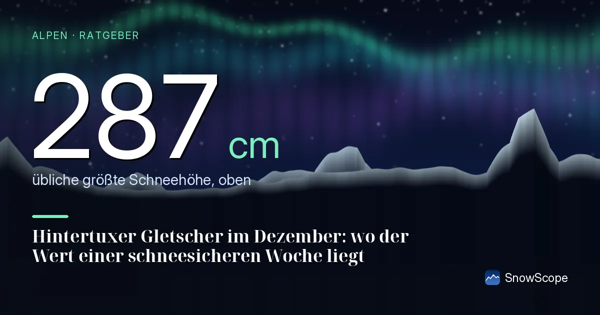

Hintertuxer Gletscher im Dezember: wo der Wert einer schneesicheren Woche liegt
Die Schneefrage am Hintertux ist geklärt: An einem typischen 15. Dezember hat der Gipfel (3245 m) 98 cm, und in der Woche 15.–21. Dezember hatte jeder einzelne Winter in 46 Jahren dort oben 30 cm oder mehr. Die echte Frage ist, ob der Preis und das Terrain zu deiner Woche passen.
Die Live-Schneeprognose für Hintertuxer Gletscher in der SnowScope-AppSchneehöhen, Pulverschnee-Alarme und 3D-Karte, gratis.
Spitze bis Mittelteil: Schnee ist zuverlässig
Auf Mittelteil (2372 m) hat ein typischer 15. Dezember 52 cm. In der Woche 15.–21. Dezember hatten 87 von 100 Wintern 30 cm oder mehr; in der Woche um Weihnachten steigt das auf 93 von 100. Selbst ein dünnes Jahr (1 Winter von 10) lässt 44 cm oben am 15. Dezember liegen, und der letzte Winter, der schwächer als der Durchschnitt war, brachte dort immer noch 44 cm.
Schnee an der Spitze bleibt dick, weil er früh fällt. Der erste Tag mit 30 cm am Gipfel ist der 29. September; auf Mittelteil ist es der 23. Oktober. Im Dezember hat der Gletscher Monate Aufbau zur Verfügung.


Das Tal-Problem im Dezember
Die Talstation sitzt auf 1500 m, wo Dezember dünn ist. Ein typischer 15. Dezember hat dort nur 16 cm, und nur 7 von 100 Wintern hatten 30 cm oder mehr in der Woche 15.–21. Dezember. Der übliche erste Tag mit genug Schneedecke für sicheres Fahren im Tal ist der 7. Januar.
Im Dezember am Hintertux planst du die obere Hälfte und benutzt die Lifte zum Abfahren. Die unteren Abfahrten sind ein Bonus, wenn der Schnee stärker als üblich ist, nicht der Plan.
Preis: Pauschalgebühr, kein Dezember-Rabatt
Ein Tageskarte für Erwachsene kostet EUR 82 die ganze Saison; eine 6-Tage-Karte kostet EUR 399. Es gibt keinen günstigeren Tarif vor Weihnachten, also kostet Dezember gleich viel wie Februar. Das ist anders als bei Skigebieten, die einen Frühjahrs-Preis anbieten.
Die Ersparnis ist für Familien: Kinder, die nach dem 1. Januar 2021 geboren sind, fahren kostenlos mit einem Erwachsenen (du brauchst einen Ausweis). Für eine Familie mit einem kleinen Kind ist diese Änderung größer als jede saisonale Rate.
Wie dieser Winter mit der Vergangenheit vergleicht
Dezember-Schnee oben hat sich über 46 Winter gehalten: Der Durchschnitt lag in den ersten 15 Wintern bei 95 cm und in den letzten 15 bei 101 cm. Der Gletscher hält sein Dezember-Versprechen. Auf Mittelteil sieht das Bild anders aus: Der Dezember-Durchschnitt fiel von 54 cm in den ersten 15 Wintern auf 45 cm in den letzten 15.
Dieser Trend ist wichtig, wenn du die oberen Abfahrten für die ganze Woche fahren möchtest. Mittelteil war früher zuverlässiger, aber es liegt trotzdem in den meisten Jahren über der 30-cm-Komfortlinie.
Hintertux gegen Kitzsteinhorn
Das Kitzsteinhorn über Kaprun ist der nächste Gletscher zum Vergleich. Beide berechnen EUR 82 für eine Tageskarte in der Hauptsaison. Am Kitzsteinhorn hat ein typischer 15. Dezember 137 cm oben (3024 m), aber nur 40 cm auf Mittelteil (1894 m). Hintertux hat am selben Tag 52 cm auf Mittelteil für denselben Tagespreis.
Für eine 6-Tage-Karte im Dezember kostet Hintertux EUR 399 gegen Kitzsteinhorn EUR 440. Wenn du die mittleren Abfahrten eine Woche im Dezember fahren möchtest, bietet Hintertux mehr Schnee und besseres Preis-Leistungs-Verhältnis.
Wann du diesen Gletscher buchen solltest
Wähle Hintertux, wenn du eine feste Woche im Dezember hast, die Termine nicht verschieben kannst und Sicherheit oben haben möchtest. Die Zahlen sprechen für diese Wahl. Wenn du auf eine gute Vorhersage warten kannst oder deine Woche verschieben kannst, könnte ein Hochdorf-Skigebiet mit Frühjahrs-Preis weniger kosten und dir mehr Abwechslung geben.
Tipps für Skifahrer
- Plan, ab etwa 2372 m aufwärts im Dezember zu fahren; benutze die Lifte zum Abfahren. Die Tal-Abfahrten sind im Dezember selten fahrbar.
- Bring einen Altersnachweis für Kinder, die nach dem 1. Januar 2021 geboren sind; sie fahren kostenlos mit einem Erwachsenen (Ausweis erforderlich).
- Dezember auf 3245 m ist kalt und oft windig. Pack eine Sturmmaske, Ersatz-Handschuhe und Handwärmer.
- Skifahren abseits der Pisten auf einem Gletscher bedeutet versteckte Spalten; geh nur mit einem Bergführer und check das offizielle Lawinenbulletin von Avalanche.report – Euregio Tirol.
Zu diesen Zahlen
Die Schneehöhen der Skigebiete sind der meiste Schnee in den oberen Hängen am angegebenen Tag; es sind Schätzungen für eine Fläche, keine Messung an einem Punkt. Prognosen können sich ändern. Lies vor dem Freeriden immer den offiziellen Lawinenlagebericht.
Offizielle Lawinenlageberichte: Avalanche.report – Euregio Tyrol
Diesen Bericht zitieren
Für Forschung, Lehre oder Presse: Zahlen und Grafiken sind unter CC BY 4.0 mit dieser Quellenangabe frei nutzbar.
SnowScope (2026), Hintertuxer Gletscher im Dezember: wo der Wert einer schneesicheren Woche liegt, https://snowscope.app/blog/de/2026/11/hintertux-glacier-december-value-ski-week.html, abgerufen am 2026-11-14
SnowScope (Atlas Labs). (2026, November 14). Hintertuxer Gletscher im Dezember: wo der Wert einer schneesicheren Woche liegt. SnowScope snow reports. https://snowscope.app/blog/de/2026/11/hintertux-glacier-december-value-ski-week.html
BibTeX
@misc{snowscope2026hintertuxglacierdecember,
author = {{SnowScope (Atlas Labs)}},
title = {Hintertuxer Gletscher im Dezember: wo der Wert einer schneesicheren Woche liegt},
year = {2026},
month = nov,
howpublished = {\url{https://snowscope.app/blog/de/2026/11/hintertux-glacier-december-value-ski-week.html}},
note = {Published 2026-11-14 13:29 UTC; accessed 2026-11-14}
}· CC BY 4.0 · Methoden, Daten und Werkzeuge →
Hintertuxer Gletscher: Schnee und Temperatur nach Höhe, dieser Winter vs letzter (Werkzeuge) →
Hintertuxer Gletscher folgen
Gratis: eine Nachricht, wenn Neuschnee kommt, und jeden Morgen die Vorhersage.